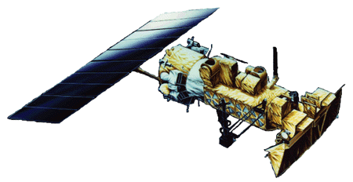
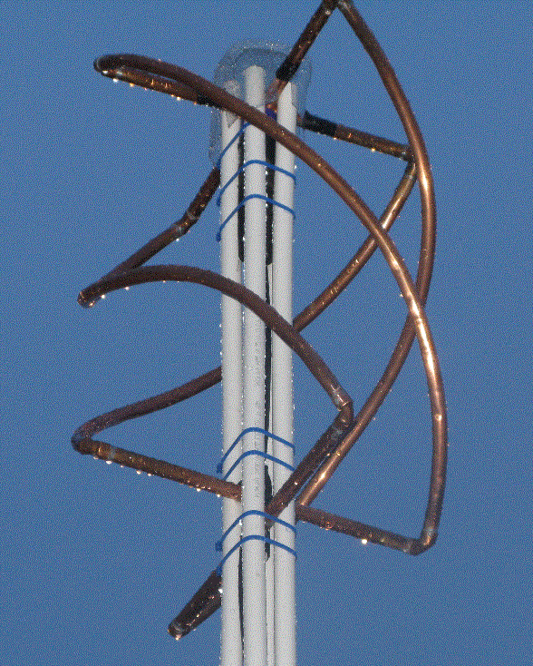
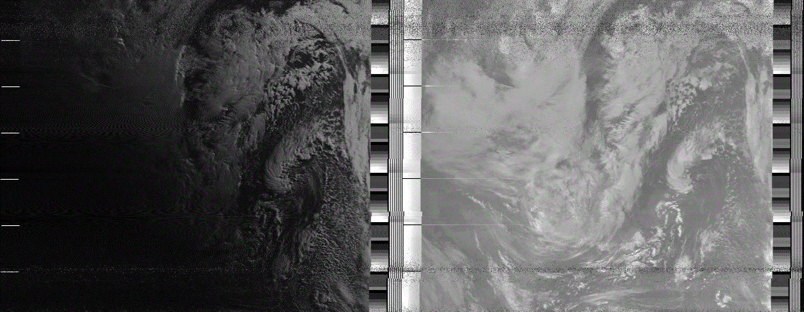
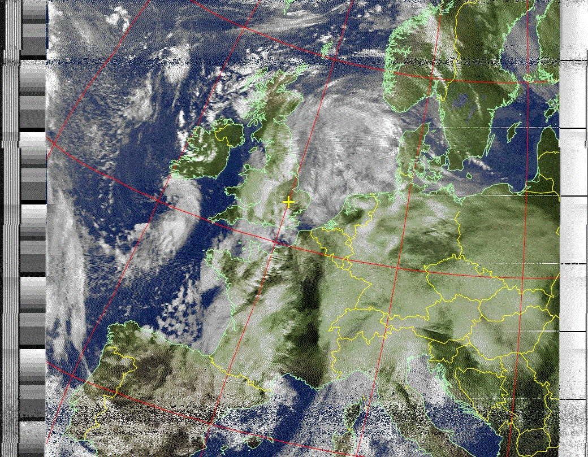
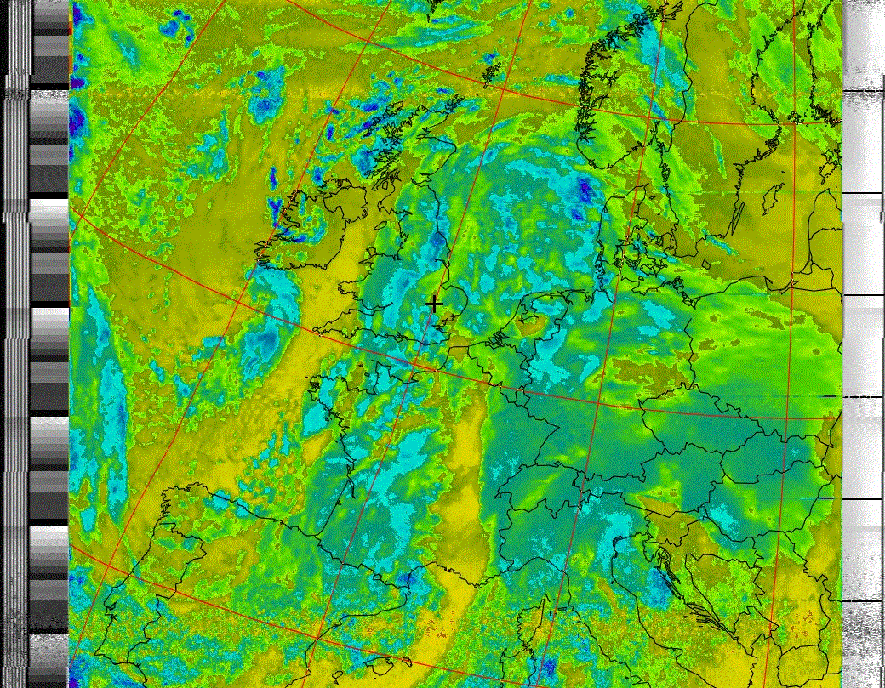

M6INV Satellite Receiver Project |
|  | This project aimed to receive downlink telemetry from weather satellites in orbit around Earth. Of most interest were the American NOAA satellites, which pass overhead several times a day, allowing for a number of images to be received. |
Over the Christmas break of 2013, I decided to build my own receiver system. After some amount of research, I came across an open source 'hack' of digital TV dongles, which allows them to be used, via a computer, as a good quality SDR. Coupled with a satellite telemetry decoding program, I thought that this would make for an interesting project. I chose to use SDR# to 'hack' the DTV dongle, and WXtoimg to decode the telemetry. I have since learned that this combination seems to be popular amongst many similar projects, so it would appear to be a reliable combination of software. The currently operational NOAA Satellites (15,18, 19) operate on frequencies around 137MHz. The data is sent as a split phase signal, at around 8.3kbps. The signal is transmitted from a QFH antenna, which circularly polarises the signal. I therefore decided to build my own matching QFH antenna for best results. Using other, simpler antennas, such as four dipoles, would also work, however this could also reduce the effectiveness. I had a few weeks to spare, so I went with the more complicated QFH. I will write page at some point, with some QFH and circular polarisation theory. The finished QFH is as in Figure 1. It measures around 0.55m high and 0.35m across. A simple balun is attached at the top of the antenna, which is protected from the elements by some plastic tops and rubber tubing. It was mounted about 4 meters off of the ground, which gave it a reasonable view of the horizon, despite being in a built up area. This was most important, as the quality and size of image depends of the the time the antenna can 'see' the satellite, before it passes behind a house, or the horizon. In end, I was able to get around ten minute passes, which allowed for some good quality photos. Interesting to note, that when I returned to university in the centre of Coventry, the reception was crystal clear form the top of a multistorey car park - bu constant pager activity drowned out the satellite's beacon. I was managing perhaps only four or six lines of imagery (3 seconds) before a pager would drown it out. Sadly, there's not much that can be done about that. |
|
 Figure 1, the mounted QFH |
As can be seen, it was quite a wet winter, but this didn't make the images any less amazing. I used the satellite tracking program Orbitron to predict when the satellites would pass overhead. My first images were in the early hourse of the morning, so I was expecting only to get IR images - visible light images would have to wait until later. After allowing for factors such as doppler shift, I began to recieve telemetry from NOAA 19. For ten minutes, the familiar tick-tock of the telemtry was heard and recorded. It is quite a characteristic sound, with IR telemetry being sent through the 'tick' and visible being sent through the 'tock', at a rate of about 2 lines per second. After the satellite passed behind the horizon, WXtoimg kicked in and decoded the data. I could view the original data (Figure 2), which shows the visible light on the left image, and the IR on the right. From the IR data, one can plot cloud formations using artifical colour (Figure 3), and thermal data showing cloud and surface tempearture can be seen (Figure 4). |
|
 Figure 2, the original data |
|
 Figure 3, artifical colour imaging |
 Figure 4, cloud/surface temperatures |
Overall, this was a really exciting and interesting project. For around £60, I had built a setup capable of receiving telemetry from weather satellites. A bit of tweaking the software allowed me to autonomise the process to some degree. The software was able to 'turn on' the decoding software at right moment, meaning I could leave the system to run and receive images without input from myself. I hope to return to the project in the future, and perhaps using a dedicated machine, autonomise the entire process of recording, saving, categorising and publishing the images online. If I do, I hope to share the details here." |